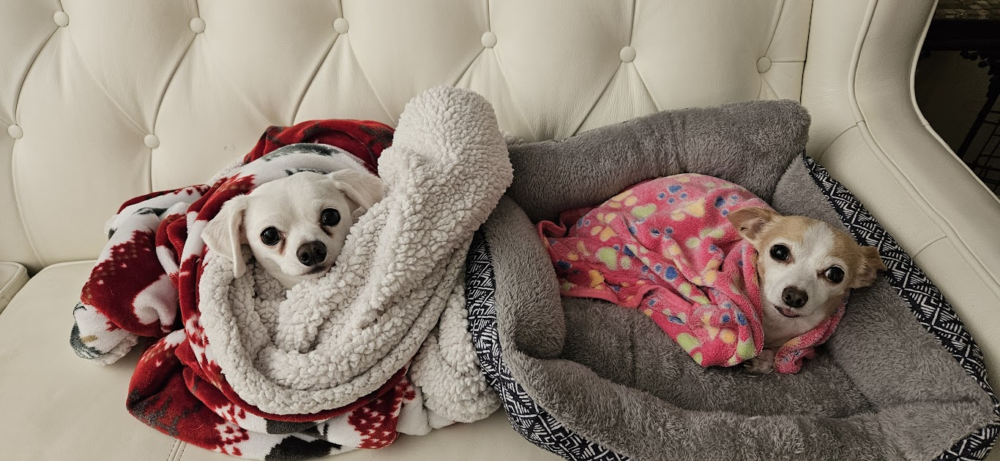
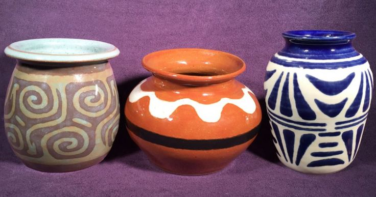

Brianna in Bloom: From Petri Dishes to Pages
Website Project 0 January 2025
All About Me
I was born and raised in Southern California, with strong ties to Mexico, where much of my family resides. Growing up, I got to experience the best of both worlds—living among the vibrant energy of California and the tranquil beauty of Mexico. Whether I was exploring the beaches and streams of LA or visiting family in La Paz, Baja California, my upbringing was a wonderful blend of coastal beauty and family warmth. It was a place where, much like the characters in Steinbeck’s The Pearl, you could find treasure in the simplest moments by the sea.
I’m currently engaged to my wonderful partner of 10 years, and we’re excited to be married in 2026! While I live with my five roommates now, back home, my household also included a unique crew of furry and feathery companions. I have four dogs, two birds, a turtle, and a chinchilla, each of them adding their own bit of chaos and joy to my daily life.

Background, Training, and Research Interests
I graduated from Cal Poly Pomona with a dual major in Microbiology and English Literature, which provided me with a unique combination of scientific knowledge and literary insight. During my time at Cal Poly, I was deeply involved in leadership roles, serving as president of three different organizations and founding the CPP Literary Laboratory. These experiences helped me build strong organizational and communication skills, which have been invaluable in my academic and professional journey.
Currently, I’m pursuing a master’s in Microbiology at the University of Hawaii at Manoa. For my research project, I’m focusing on a biotic survey of the Ala Wai Watershed using environmental DNA (eDNA), with a particular emphasis on Megalagrion species. This project combines my passion for microbiology with my interest in ecological conservation and environmental science.
In terms of data analysis and programming, my experience is quite limited. The most exciting thing I’ve done with programming so far is getting R to create a graph for me—though it was a small victory, it sparked an interest in learning more. With that in mind, what I’m hoping to gain from this course is the ability to handle large datasets with ease, create complex and visually compelling graphs, and gain the skills needed to manage and analyze complicated data sets. I also find the process of building this website really exciting, and could easily see myself continuing to explore this for fun!
Hobbies and Special Interests
Arts and Craft Arsenal
I love exploring different forms of creative expression through a variety of arts and crafts. Some of my favorite activities include:
- Crocheting: A perfect way to unwind and create cozy little treasures.
- Knitting: I find the rhythmic process calming, and it’s a great way to make gifts.
- Drawing and Painting: Whether it’s sketches or full-blown pieces, this is where I let my imagination run wild.
- Writing: Naturally, this is one of my main passions. (As you can tell!)
- Sewing: I’m learning how to make clothes and dreaming of one day crafting my own costumes from scratch.
- Whittling: This is a new skill I’m picking up, and it’s a lot more challenging and rewarding than I expected.
- Ceramics and Chainmail: Both are on my list of things to learn soon—talk about a cool combo, right?

I have big dreams of someday being able to sew a complete costume from scratch, perhaps inspired by some of the characters I’ve spent countless hours exploring (because, let’s face it, who wouldn’t want a Master Sword replica?).
The Writer
Writing has been a passion of mine since I was young. Whether I’m crafting short stories, exploring poetry, or building larger worlds for my book ideas, writing allows me to express thoughts and ideas that might otherwise go unsaid. Though I have two books in progress that I’ve put on pause for now, each one has been a valuable learning experience, teaching me more about my creative process and how I approach storytelling. Alongside these personal projects, I’ve had the privilege of seeing my poetry and short stories published in various literary journals, which has been both exciting and humbling.
For me, writing isn’t just about completing a manuscript; it’s about the journey of discovery and growth that each project offers. I look forward to continuing to hone my craft and challenge myself with new writing ventures.
Chasing History
History has always been an obsession of mine, especially the fascinating stories of the Middle Ages. Lately, I’ve been diving deep into the Norman-Plantagenet Alliance and its impact during the early Middle Ages—talk about an exciting period of intrigue, power, and influence!
I’ve also been lucky enough to travel to some incredible places that have shaped my love for history. Some of my favorite stops have included:
- England, Wales, and Scotland
- Ireland
- France
- Mexico
- Bahamas
- Italy
Scotland and Italy were by far my favorite places. These gorgeous locations, filled with art, architecture, and ancient ruins, have a history that’s truly breathtaking. Their castles and the vibrant histories that shape them made me never want to leave. There’s something magical about immersing myself in the stories of these places. The most memorable place in Italy to me was in Florence, but more than that it was getting to see their huge art museum known as “Le Gallerie degli Uffzi”.
Fun Fact! Knock Castle, found in Ballater of Aberdeenshire, was granted to the Gordons of Abergeldie following the Battle of Corrichie wherein the Earl of Huntly and his men faced against the forces of Mary, Queen of Scots. The battle was fought on October 28th, 1562 (My birthday 436 years ago!)
Fun Fact! The Duomo of Florence’s iconic dome, crafted by Filippo Brunelleschi, was a groundbreaking feat of engineering for its time. Remarkably, it was constructed without scaffolding, a method that was unheard of at the time. Brunelleschi’s innovative design featured a double-shell structure with a herringbone brick pattern to evenly distribute the weight, ultimately creating the largest brick dome ever built. This remarkable achievement is still considered one of the greatest architectural masterpieces of the Renaissance.
Current Reads and Reading Goals
Reading has always been a passion of mine, whether I’m diving into the classics or exploring new genres. At the moment, I’m balancing a few books—some for leisure and others that fuel my ongoing research. I love getting lost in stories that transport me to different times and places, especially historical fiction or works related to the Middle Ages. As for my reading goals, I’m always looking to expand my literary horizons, especially in areas related to history, science, and classic literature. Whether it’s tackling a massive historical biography or rereading a favorite, there’s always something new to discover in the pages of a good book.
Goals Accomplished in 2024
Books Read
49 Books Read
Pages Read
Read 15,621 pages in 365 days, shortest book was 50 pages long, longest book was 1184 pages long.
Top Five Genres
- Fantasy
- Horror
- Classics
- Literary
- History
Favorite Book of 2024

The Familiar by Leigh Bardugo
Goals for 2025
Books Read
12 or more Books
Pages Read
Read 10,000 pages in 365 days
Other Reading Goals
- Explore 5 less explored genres in my library (e.g., biographies, short stories, contemporary, thrillers, and mystery)
- Tackle My Ever Growing Shelf (aka read 10 books I own here in Hawaii)
- Read one book in my site practice language (Spanish or Italian)
- Read 3 historically “banned” books
This is a Quarto website.
To learn more about Quarto websites visit https://quarto.org/docs/websites.